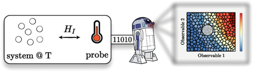
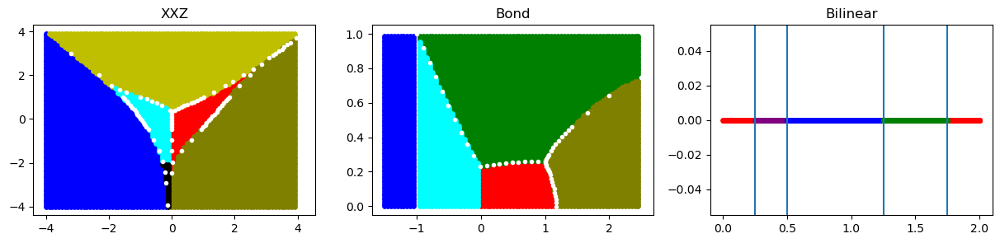

Machine classification for probe-based quantum thermometry
Fabrício S. Luiz, A. de Oliveira Junior, Felipe F. Fanchini, and Gabriel T. Landi
Phys. Rev. A 105, 022413 (2022).
We consider probe-based quantum thermometry and show that machine classification can provide model-independent estimation with quantifiable error assessment. Our approach is based on the k-nearest-neighbor algorithm. The machine is trained using data from either computer simulations or a calibration experiment. This yields a predictor which can be used to estimate the temperature from new observations. The algorithm is highly flexible and works with any kind of probe observable. It also allows one to incorporate experimental errors, as well as uncertainties about experimental parameters. We illustrate our method with an impurity thermometer in a Bose gas, as well as in the estimation of the thermal phonon number in the Rabi model.
Learn more

Model-Independent Quantum Phases Classifier
F Mahlow, FS Luiz, AL Malvezzi, FF Fanchini
Machine learning has revolutionized many fields of science and technology. Through the -Nearest Neighbors algorithm, we develop a model-independent classifier, where the algorithm can classify phases of a model to which it has never had access. For this, we study three distinct spin- models with some common phases: the XXZ chains with uniaxial single-ion-type anisotropy, the bound alternating XXZ chains, and the bilinear biquadratic chain. We show that, with high probability, algorithms trained with two of these models can determine common phases with the third. It is the first step toward a universal classifier, where an algorithm is able to detect any phase with no knowledge about the Hamiltonian, only knowing partial information about the quantum state.
Learn more
Quantum thermodynamics aspects with a thermal reservoir based on-symmetric Hamiltonians
JFG Santos and FS Luiz
Journal of Physics A: Mathematical and Theoretical 54 (33), 335301 (2021).
We present results concerning aspects of quantum thermodynamics under the background of non-Hermitian quantum mechanics for the dynamics of a quantum harmonic oscillator. Since a better control over the parameters in quantum thermodynamics processes is desired, we use concepts from collisional model to introduce a simple prototype of thermal reservoir based on PT-symmetric Hamiltonians and study its effects under the thermalization process of a single harmonic oscillator prepared in a displaced thermal state. We verify that controlling the PT-symmetric features of the reservoir allows to reverse the heat flow between system and reservoir, as well as to preserve the coherence over a longer period of time and reduce the entropy production. Furthermore, we considered a modified quantum Otto cycle in which the standard hot thermal reservoir is replaced by the thermal reservoir based on PT-symmetric Hamiltonians. By defining an effective temperature depending on the PT-symmetric parameter, it is possible to interchange the quantum Otto cycle configuration from engine to refrigerator by varying the PT-symmetric parameter. Our results indicate that PT-symmetric effects could be useful to achieve an improvement in quantum thermodynamics protocols such as coherence protection and entropy production reduction.
Learn more
Unitarity of the time-evolution and observability of non-Hermitian Hamiltonians for time-dependent Dyson maps
F S Luiz, M A de Ponte and M H Y Moussa
Physica Scripta 95 (6), 065211 (2020).
We present results concerning aspects of quantum thermodynamics under the background of non-Hermitian quantum mechanics for the dynamics of a quantum harmonic oscillator. Since a better control over the parameters in quantum thermodynamics processes is desired, we use concepts from collisional model to introduce a simple prototype of thermal reservoir based on PT-symmetric Hamiltonians and study its effects under the thermalization process of a single harmonic oscillator prepared in a displaced thermal state. We verify that controlling the PT-symmetric features of the reservoir allows to reverse the heat flow between system and reservoir, as well as to preserve the coherence over a longer period of time and reduce the entropy production. Furthermore, we considered a modified quantum Otto cycle in which the standard hot thermal reservoir is replaced by the thermal reservoir based on PT-symmetric Hamiltonians. By defining an effective temperature depending on the PT-symmetric parameter, it is possible to interchange the quantum Otto cycle configuration from engine to refrigerator by varying the PT-symmetric parameter. Our results indicate that PT-symmetric effects could be useful to achieve an improvement in quantum thermodynamics protocols such as coherence protection and entropy production reduction.
Learn more
All-creation and all-annihilation time-dependent PT-symmetric bosonic Hamiltonians: An infinite squeezing degree at a finite time
M. A. de Ponte, F. S. Luiz, O. S. Duarte, and M. H. Y. Moussa
Phys. Rev. A 100, 012128 (2019).
Here we introduce the all-creation and all-annihilation time-dependent (TD) PT -symmetric bosonic Hamiltonians, which in the interaction picture are described only by creation or annihilation operators. These
Hamiltonians are defined from the most general TD PT -symmetric quadratic bosonic Hamiltonian, describing
a cavity mode under linear and parametric amplifications. After presenting a general ansatz for the derivation
of the TD Dyson map and metric operators, we solve the Schrödinger equations for both the PT -symmetric
Hamiltonian and its Hermitian counterpart. We then compute analytically the squeezing degree coming from the
all-annihilation Hamiltonian and compare the result with that coming from an ordinary Hermitian Hamiltonian,
showing a crucial result for interferometric procedures: instead of the asymptotic divergence of the squeezing
degree that takes place for a Hermitian parametric pumping, the all-annihilation amplification leads to a
divergence of that quantity at a finite controllable time.
Learn more
Non-Hermitian noncommutative quantum mechanics
J. F. G. dos Santos, F. S. Luiz, O. S. Duarte and M. H. Y. Moussa
Eur. Phys. J. Plus 134: 332 (2019).
In this work we present a general formalism to treat non-Hermitian and noncommutative Hamiltonians. This is done employing the phase-space formalism of quantum mechanics, which allows to write a set of robust maps connecting the Hamitonians and the associated Wigner functions to the different Hilbert space structures, namely, those describing the non-Hermitian and noncommutative, Hermitian and noncommutative, and Hermitian and commutative systems. A general recipe is provided to obtain the expected values of the more general Hamiltonian. Finally, we apply our method to the harmonic oscillator under linear amplification and discuss the implications of both non-Hermitian and noncommutative effects.
Learn more

Linear response theory for a pseudo-Hermitian system-reservoir interaction
OS Duarte, FS Luiz, MHY Moussa
Europhysics Letters, 121, 5 (2018).
We present here an extension of the Caldeira-Leggett linear response model considering a pseudo-Hermitian ${\cal PT}$ -symmetric system-reservoir interaction. Our generalized Feynman-Vernon functional, derived from the ${\cal PT}$ -symmetric coupling, accounts for two influence channels: a velocity-dependent one, which can act in reverse, providing energy to the system instead of draining it as usual, and an acceleration-dependent drain, analogue to the radiation-emission process. Therefore, an adequate choice of the Hamiltonian's parameters may allow the system to extract energy from the reservoir even at absolute zero for a period that may be much longer than the characteristic relaxation time. After this energy supply, the system is driven to a steady state whose energy is necessarily higher than the thermodynamic equilibrium energy due to the velocity-dependent pump. This heating mechanism of the system is more pronounced the more distant from the hermiticity is its coupling with the reservoir. An analytical derivation of the high-temperature master equation is provided helping us to better understand the whole scenario and to compute the associated relaxation and decoherence rates.
Learn more

Heralded entangling quantum gate via cavity-assisted photon scattering
Halyne S. Borges, Daniel Z. Rossatto, Fabrício S. Luiz, and Celso J. Villas-Boas
Phys. Rev. A 97, 013828 (2018).
We theoretically investigate the generation of heralded entanglement between two identical atoms via cavity-assisted photon scattering in two different configurations, namely, either both atoms confined in the same cavity or trapped into locally separated ones. Our protocols are given by a very simple and elegant single-step process, the key mechanism of which is a controlled-phase-flip gate implemented by impinging a single photon on single-sided cavities. In particular, when the atoms are localized in remote cavities, we introduce a single-step parallel quantum circuit instead of the serial process extensively adopted in the literature. We also show that such parallel circuit can be straightforwardly applied to entangle two macroscopic clouds of atoms. Both protocols proposed here predict a high entanglement degree with a success probability close to unity for state-of-the-art parameters. Among other applications, our proposal and its extension to multiple atom-cavity systems step toward a suitable route for quantum networking, in particular for quantum state transfer, quantum teleportation, and nonlocal quantum memory.
Learn more

Gauge linked time-dependent non-Hermitian Hamiltonians
FS Luiz, MA de Ponte, MHY Moussa
In this work we address systems described by time-dependent non-Hermitian Hamiltonians under time-dependent Dyson maps. We shown that when starting from a given time-dependent non-Hermitian Hamiltonian which is not itself an observable, an infinite chain of gauge linked time-dependent non-observable non-Hermitian Hamiltonians can be derived from it. The matrix elements of the observables associated with all these non observable Hamiltonians are, however, all linked to each other, and in the particular case where global gauges exist, these matrix elements becomes all identical to each other. In this case, therefore, by approaching whatever the Hamiltonian in the chain we can get information about any other Hamiltonian. We then show that the whole chain of time-dependent non-Hermitian Hamiltonians collapses to a single time-dependent non-Hermitian Hamiltonian when, under particular choices for the time-dependent Dyson maps, the observability of the Hamiltonians is assured. This collapse thus shows that the observability character of a non-Hermitian Hamiltonian prevents the construction of the gauge-linked Hamiltonian chain and, consequently, the possibility of approaching one Hamiltonian from another.
Learn more

Teleportation-based continuous variable quantum cryptography
FS Luiz and G Rigolin
Quantum Information Processing 16, 58 (2017)
We present a continuous variable (CV) quantum key distribution
(QKD) scheme based on the CV quantum teleportation of coherent states
that yields a raw secret key made up of discrete variables for both Alice and
Bob. This protocol preserves the efficient detection schemes of current CV
technology (no single-photon detection techniques) and, at the same time, has
efficient error correction and privacy amplification schemes due to the binary
modulation of the key. We show that for a certain type of incoherent attack it
is secure for almost any value of the transmittance of the optical line used by
Alice to share entangled two-mode squeezed states with Bob (no 3 dB or 50%
loss limitation characteristic of beam splitting attacks). The present CVQKD
protocol works deterministically (no postselection needed) with efficient direct reconciliation techniques (no reverse reconciliation) in order to generate
a secure key and beyond the 50% loss case at the incoherent attack level.
Learn more
Implementation of quantum logic gates using coupled Bose-Einstein condensates
FS Luiz, EI Duzzioni, L Sanz
Brazilian Journal of Physics 45, 550 (2015)
In this work, we are interested in the implementation of single-qubit gates on coupled Bose-Einstein condensates (BECs). The system, a feasible candidate for a qubit, consists of condensed atoms in different hyperfine levels coupled by a two-photon transition. It is well established that the dynamics of coupled BECs can be described by the two-mode Hamiltonian that takes into account the confinement potential of the trap and the effects of collisions associated with each condensate. Other effects, such as collisions between atoms belonging to different BECs and detuning, are included in this approach. We demonstrate how to implement two types of quantum logic gates: population-transfer gates (NOT, Y, and Hadamard), which require a population inversion between hyperfine levels, and phase gates (Z, S, and T), which require self-trapping. We also discuss the experimental feasibility by evaluating the robustness of quantum gates against variations of physical parameters outside of the ideal conditions for the implementation of each quantum logic gate.
Learn more
Optimal continuous variable quantum teleportation protocol for realistic settings
FS Luiz and Gustavo Rigolin
Annals of Physics 354, 409 (2015)
We show the optimal setup that allows Alice to teleport coherent states to Bob giving the greatest fidelity (efficiency) when one takes into account two realistic assumptions. The first one is the fact that in any actual implementation of the continuous variable teleportation protocol (CVTP) Alice and Bob necessarily share non-maximally entangled states (two-mode finitely squeezed states). The second one assumes that Alice's pool of possible coherent states to be teleported to Bob does not cover the whole complex plane. The optimal strategy is achieved by tuning three parameters in the original CVTP, namely, Alice's beam splitter transmittance and Bob's displacements in position and momentum implemented on the teleported state. These slight changes in the protocol are currently easy to be implemented and, as we show, give considerable gain in performance for a variety of possible pool of input states with Alice.
Learn more
Atom-mediated effective interactions between modes of a bimodal cavity
FO Prado, FS Luiz, JM Villas-Bôas, AM Alcalde, EI Duzzioni, L Sanz
Phys. Rev. A 84, 053839 (2011).
We show a procedure for engineering effective interactions between two modes in a bimodal cavity. Our system consists of one or more two-level atoms, excited by a classical field, interacting with both modes. The two effective Hamiltonians have forms similar to beam-splitter and quadratic beam-splitter interactions. We also demonstrate that the nonlinear Hamiltonian can be used to prepare an entangled coherent state, also known as a multidimensional entangled coherent state, which has been pointed out as an important entanglement resource. We show that the nonlinear interaction parameter can be enhanced considering N independent atoms trapped inside a high-finesse optical cavity.
Learn more